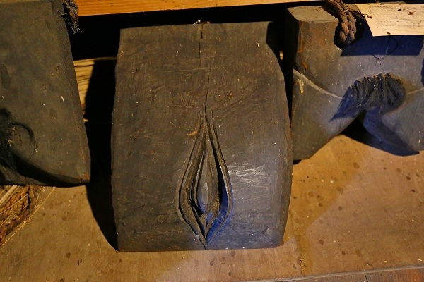

奥会津に
火伏せという習俗があると聞き、その詳細を確かめに行ってみた。
火伏せとは文字通り
火災除けの呪いである。
木彫りの男根と女陰を家の屋根裏の棟木に括りつけるもので、平成6年に福島県重要有形民俗文化財に指定されている。
つまり平たく言うと屋根裏の棟木の両サイドに男女の性器を祀り、火事が起こらないように祈願するのだ。
この習俗、江戸時代から連綿と続いているそうだ。
今でも古い民家の屋根裏にはあるそうな。
さすがに一般の民家の天井を剥がして屋根裏のチンマン見せてください～！と突撃しても行きつく先は
ポリス沙汰になるだけなので、ここはひとつ各資料館のお力を借りたいと思う。
最初に訪れたのが奥会津博物館南郷館。
ここはかつて南郷村と呼ばれた地域にある博物館で、雪深いこの地の生活の様子を紹介している博物館である。
その中に火伏せの展示があった。
説明書きによれば無火災と子孫繁栄を願う風習、とある。
男性の方は木製の男根に縄で結ったキンタマを付けてある。

女性の方は腹から腿の部分を切り取った描写。
これまでにも何度か言及したが、日本の性器信仰において男性器の表現はほぼ同一なのに、女性器の表現は多彩だ。
もちろん男性器に比べて表現しにくい、という事情はよーく判るのだが、それにしてもその方法は多様過ぎる。
例えば西日本では藁を編んだエジコのようなモノで女性器を表現するケースが多い。
更に熊本の弓削神宮などでは板に菱形を描いたモノを女性器としている。
ここ、旧南郷村では腹から腿を切り取ることで女性器を表現しているのだ。
陰毛まで忠実に表現している辺りに真剣さが感じられて、チョットビビる。
そんな博物館の裏手には昔ながらの曲家が保存展示されている。
内部はかつての民具が展示されているのだが、職員さんに「こっちに面白いものがあるよ」と案内して頂いたのが…
これである。
おおおお、ズラリと並んだ木製チンコ。
これらは町内の家屋に奉納されていた火伏せの木製男根だという。
聞けば古い家が解体される際に、博物館の職員さんが交渉して譲ってもらったものだそうな。
いわば町の記憶そのものといえよう。
どれも囲炉裏の煙に燻されて真っ黒になってそれなりの風格を漂わせている。
普通、民家に奉納されるのは一対の男女の木製の性器だけ。
それがこれだけ集まると、えも言えぬ迫力が増してくる。
男根の隣には女陰のコレクションが。
男根が「画一的」なのに対して、女陰は南郷村内でも様々なバリエーションが確認できる。

四角い木材で局部をクローズアップしたものや
若干抽象的なモノ。
古い時代にモノは最早何を象っているのか良く判らないモノもあった。
それにしても何故男女の性器が火伏せ祈願の奉納物に成り得るのだろう？
色々資料を当たってみたのだがどうもはっきりしない。
…という訳でここからは私の私感を炸裂させていただくが、さっくり言って要は性器からはおしっこが出るからではなかろうか？
いや、身も蓋もない事を言っているのは重々承知の助、なのだが、それ以外に合理的な理由が思い浮かばないのだ。
よく、田舎に行くと土蔵蔵の妻や棟りに「水」と書いてある事がある。
火伏もそれと同じ意味を持っているのではないか？
火事におしっこかけても焼け石に水、という気がしないでもないが、それ程人々は真剣に火事を恐れていたのだろう。
因みに東京や近県の古物商もこの火伏せの呪物を欲しがっており、その争奪戦は結構ハードなものらしい。
これらの火伏が保管されている曲屋自体にも火伏せの男女の性器が奉納されているという。
薄暗い屋根裏を凝視すると辛うじて男根だけは確認できた。
↑メチャ増感してやっと判るレベル。
薄暗い物置のようなところでじっくりと男根を鑑賞させていただきました。
囲炉裏の煙で燻されて黒光りする男根はその艶だけでマジカルな力を持っていそうな感じがする。
次に訪れたのは旧南郷村より20キロほど南にある前沢曲家集落。
明治40年の大火の後、一斉に建物が再建されたため明治末期の建物が多く残るという点で国の伝建地区に指定されている。
ここもまた伝統的な曲屋が多く建っている。
集落内には内部を開放している家屋が数件ある。
その中の一軒に火伏せの男根があった。
管理している方の説明では観光用に敢えて見やすいところに飾った、との事。
普通は一番高い棟の一番端にあるので、見にくいのだという。
なるほど、性器信仰というと一般的にはこれ見よがしな見せ方が多いが、奥会津の火伏せは「わかる奴だけわかればいい」というポジショニングのようだ。
その奥ゆかしさにチョット痺れた。
集落内では熊の手足の塩漬けが売られていた。ホンマかいな。
ところ変わって奥会津博物館。
ここは前述の2件よりは東に位置する西沢という在にあり、奥会津とはいうものの、より会津に近い場所にある。
伝統的な古民家を移築した展示がメインだ。
やはりここも火事が恐ろしかったのか、棟飾りに水の字が見られる。

ここでは火伏せとしてドウソジン、ヤバネと呼ばれる棟飾りが展示されていた。
名前だけは火伏せというが、関東でもよく見られる棟上げの際の
矢型の飾りによく似た形状のものだ。
火伏せといっても様々な形状があるんですね。
この火伏せの習俗、実は現代でも継承されているのだ。
今でもこの地域では家を新築する際、男女の性器を棟に付けることがあるという。
中には鉄骨造の建物に括りつけた事例もあるというから驚きだ。
かように南会津の人々にこの習俗は深く根差している。
それは裏返せばこの地域の人々が
如何に火災を恐れて生きて来たか、を表しているといえよう。
村の大半が被害を受けた前沢の集落の例を挙げるまでもなく、山間部の集落の火災はかなりのダメージを集落自体に与えることになる。
そこには単なる子宝祈願のチンチン奉納とは一線を画した深刻な事情が垣間見えてくるのだ。
参考文献：火伏せの里 安藤紫香